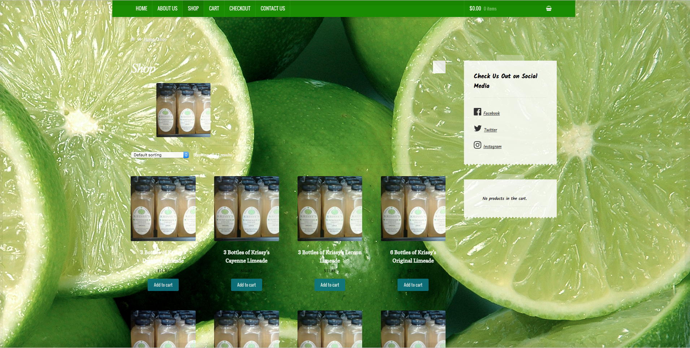

<div class="cbp-l-project-title">Krissy's Homemade Limeade</div>
<div class="cbp-l-project-subtitle">by Code Splash</div>

<div class="cbp-slider">
    <ul class="cbp-slider-wrap">
        <li class="cbp-slider-item">
            
        </li>
        <li class="cbp-slider-item">
            
        </li>
<!--
        <li class="cbp-slider-item">
            
        </li>
-->
    </ul>
</div>

<div class="cbp-l-project-container">
    <div class="cbp-l-project-desc">
        <div class="cbp-l-project-desc-text">Krissy's Homemade Limeade is a Limeade Company based out of Virginia providing their tasty signature limeade to the entire country. We worked with Krissy to provide a E-commerce site that her customers and come to and order Limeade with ease</div>
    </div>
    <div class="cbp-l-project-details">
        <ul class="cbp-l-project-details-list">
            <li><strong>Client</strong>Krissy's Homemade Limeade</li>
            <li><strong>Date</strong>20 August 2016</li>
            <li><strong>Categories</strong>Graphics, Web Design</li>
        </ul>
        <a href="http://krissyshomemadelimeade.com/" target="_blank" class="cbp-l-project-details-visit">OPEN PROJECT</a>
    </div>
</div>